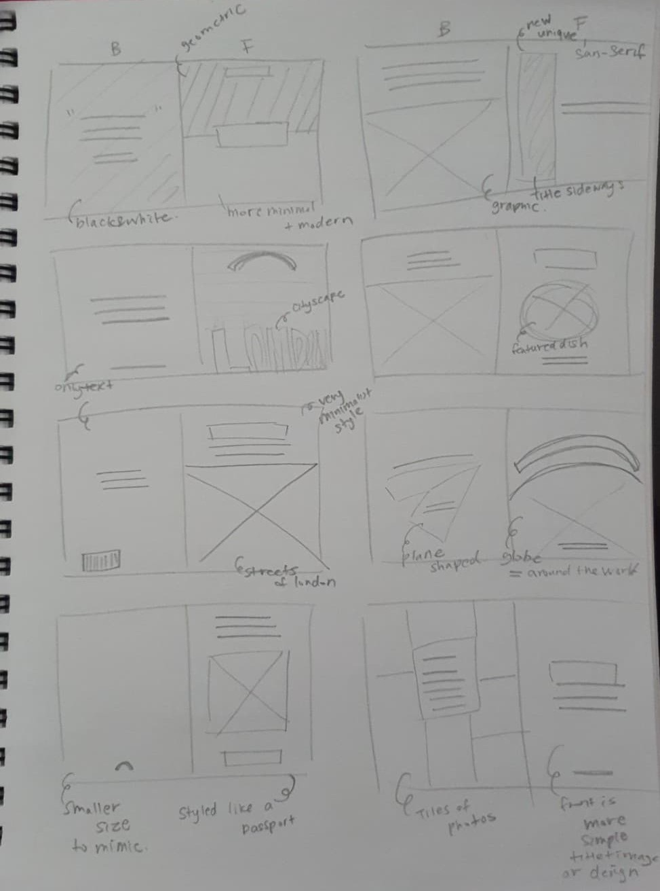
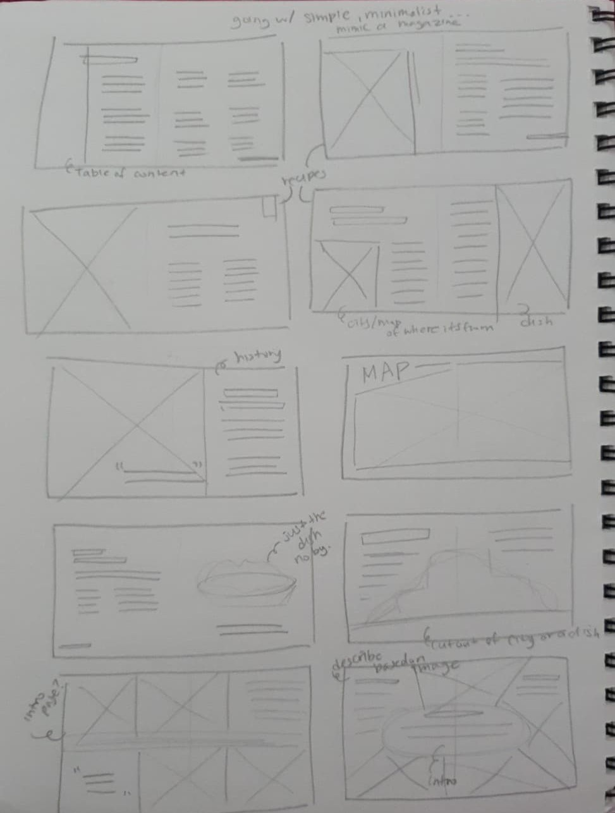
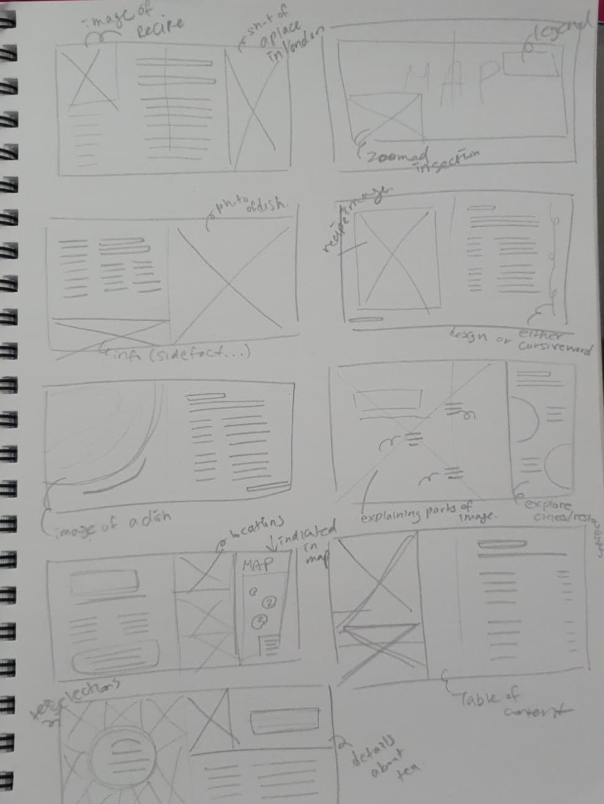
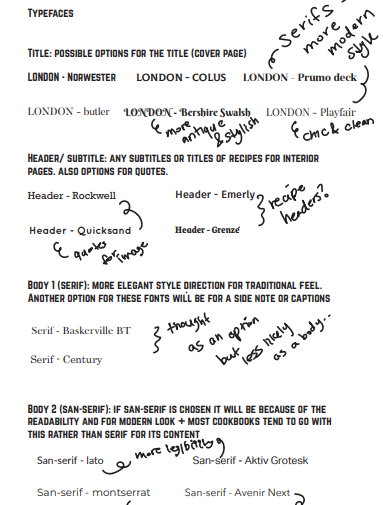

London
To share the taste of London for the readers to try out at homeSkill
Graphic Design, Ideation, Branding, Print/Web DesignTools
Indesign, PhotoshopProject Overview
The goal of this project was to design a print illustrated book, where I am to identify an audience to renew the book’s original concept and theme to alter the designs to cater it towards a specific audience I decide on.
The original book: Williams Sonoma’s foods of the world collection, London: Authentic Recipes Celebrating Foods of the World, is a cookbook that explores the heart of London sharing histories and recipes from traditional British cooking to modern delicacies, revealing the pleasures of the elegant city. One unique factor about this publication was the content and the style the author tries to walk through the journey for the audience; it starts off with the culinary history, followed by key locations and foods of London before presenting the recipes.
The Audience
I developed 2 possible audiences for the new book design with the target audience being mostly women as most cookbook buyers are women.
Main audience: Beginner Foodie Traveller (going to London), ages around 20s - mid 30s.
To adhere as a guide book and a souvenir after traveling London. It will help the foodie traveller to learn a little bit about London before going or it can also become a collection as a souvenir to have to recall the trip and to try the recipes at home.
Secondary audience: Home cooks including mothers and individuals who like cooking and trying out new recipes.
For learning about the recipes and about London’s best dishes. To help learn more about the traditional dishes that readers could try cooking as well as get a hint of culinary history along with recommendations.
Concept & Alteration




Based on the original design, the major alteration I made was the overall style. To cater towards an audience ranging 20s-30s, I wanted to create a minimalistic yet elegant themed layouts for a modern look. To cater it towards my audience, I aimed to make the book more unique and collectable, something to be looked back for.
Final Design:


Reflection
From this project, I was able to understand ways to interpret the author and the audience as well as using type and images together to make an aesthetically pleasing design. Furthermore, I was able to touch upon designing layouts for print considering the colours, type, sizes, negative space, and hierarchy. I enjoyed rebranding the cookbook into a fresh style.